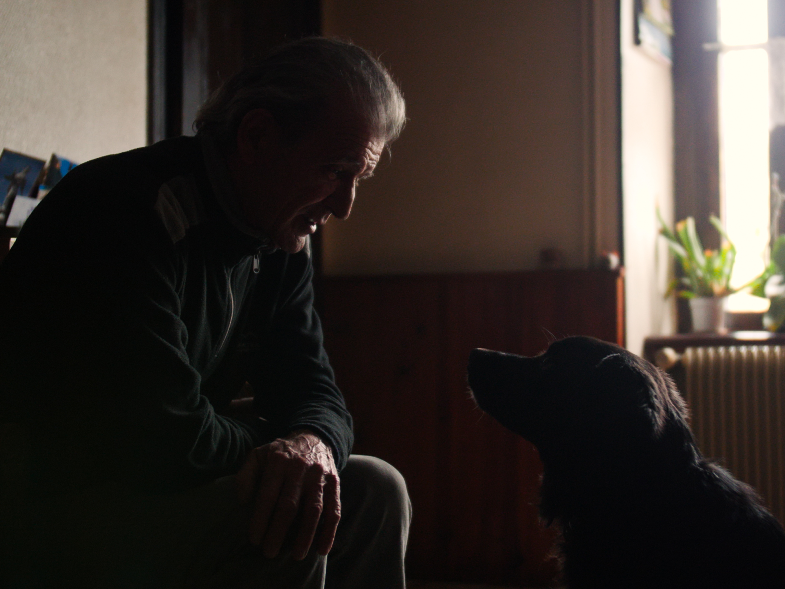
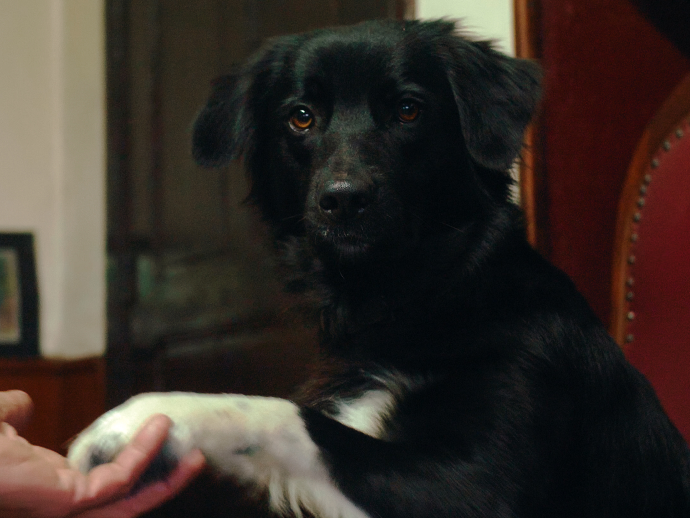
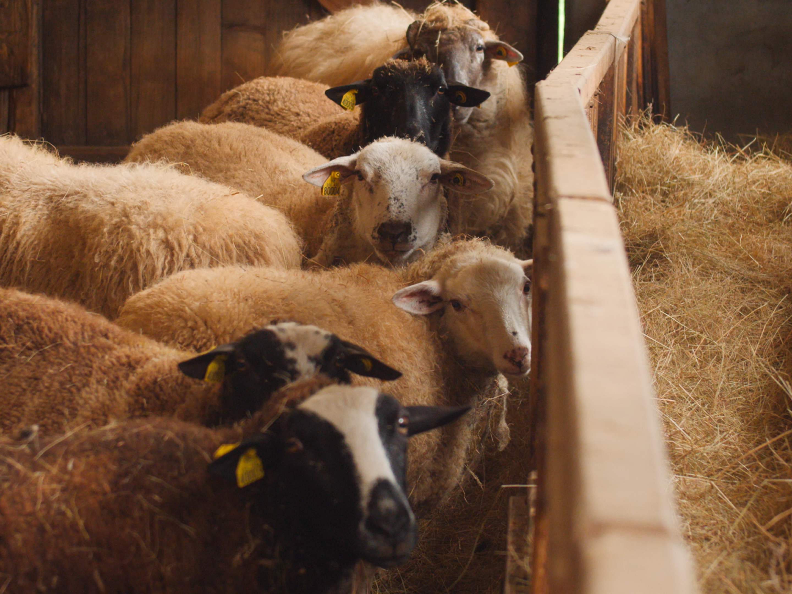
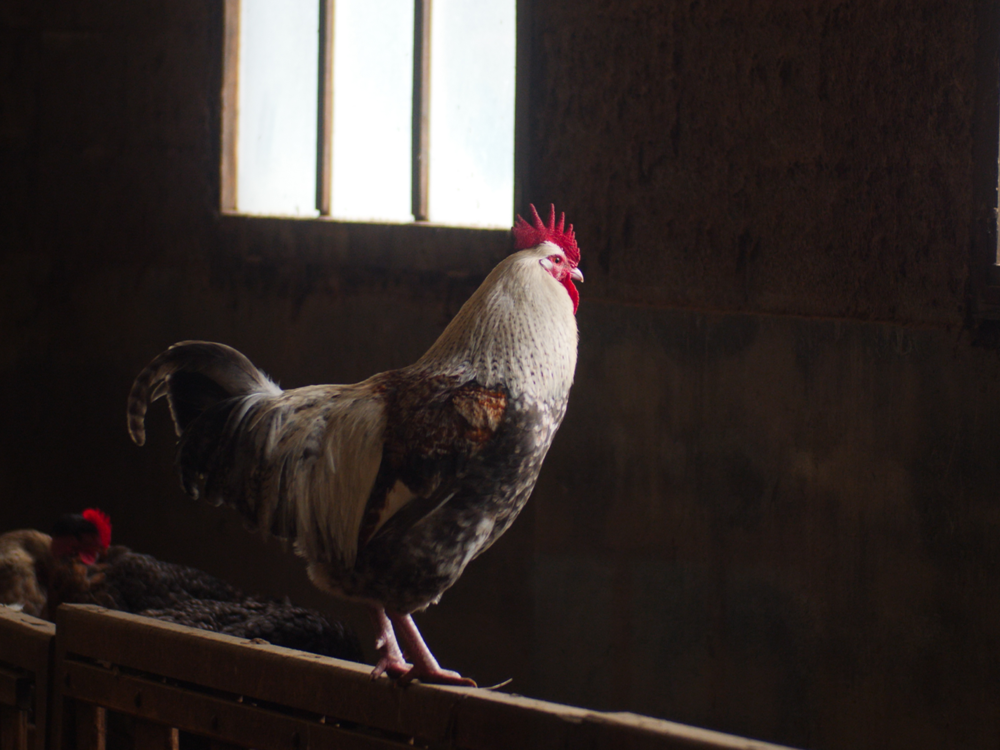
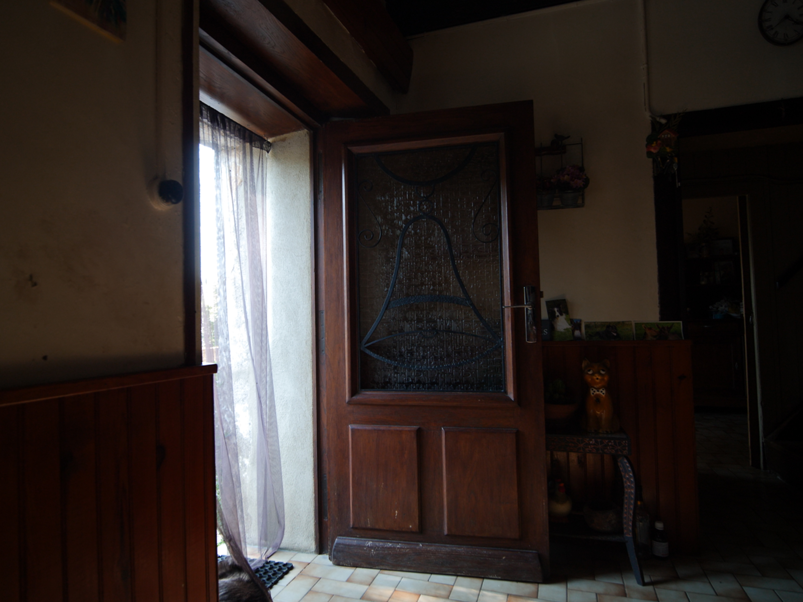
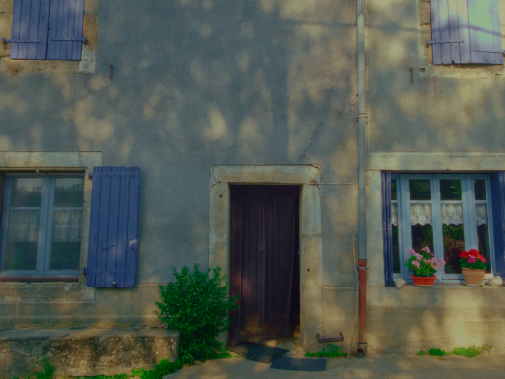

DOCUMENTARY SHORT MOVIE · Currently in post-production
JACK
Un portrait documentaire en cours de montage autour de Jack, de Belle, sa chienne, de sa maison et de son village.
À travers son quotidien, le film raconte aussi une génération : celle des premiers agriculteurs du village à être partis en ville pour étudier, à une époque où le progrès commençait à changer les habitudes et les façons de vivre.
Les animaux traversent le film, comme ils traversent le quotidien de cette maison où la porte est toujours ouverte.
Un portrait intime d’un homme, d’un lieu et d’une génération, entre souvenirs, quotidien et transformations.







CREDITS
Lisa THIBOUST